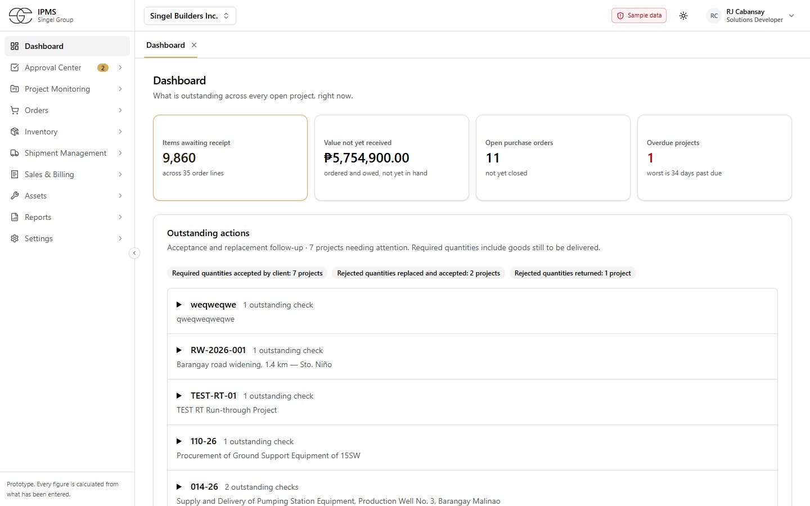
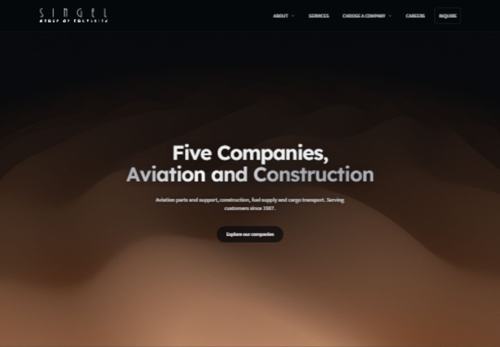
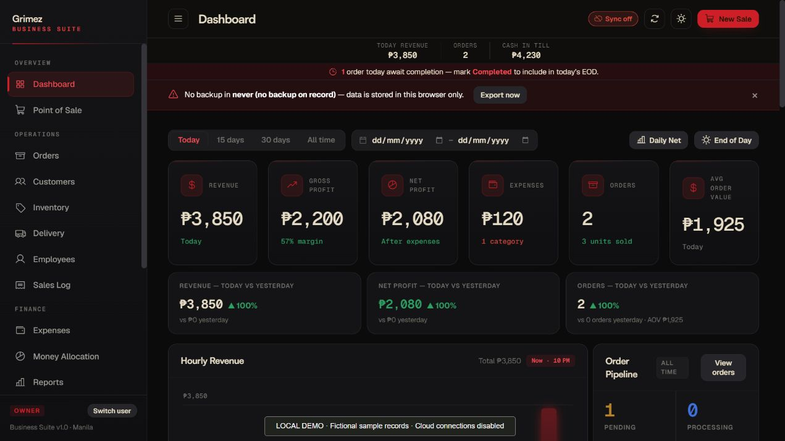
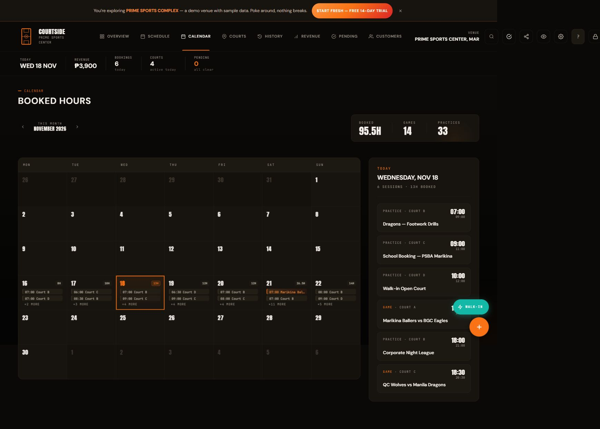
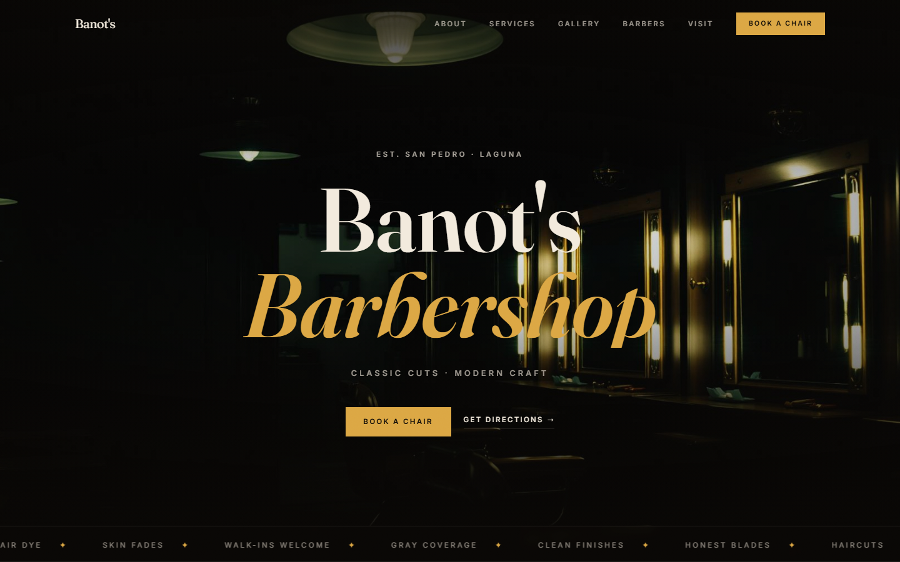
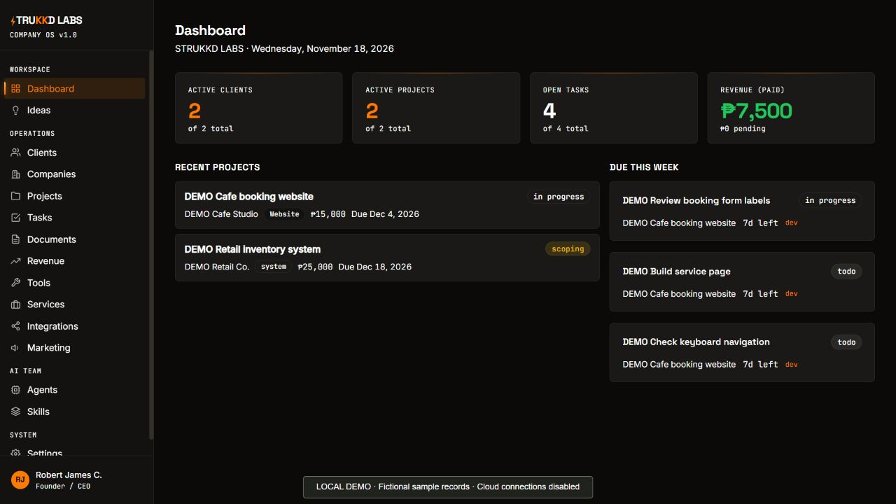
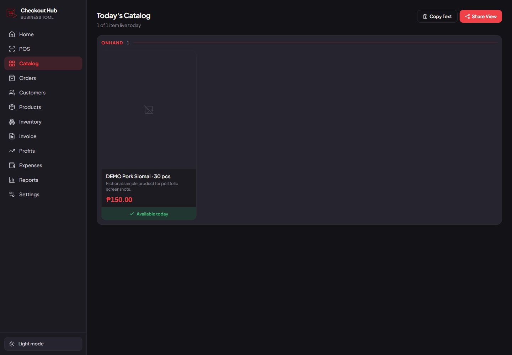
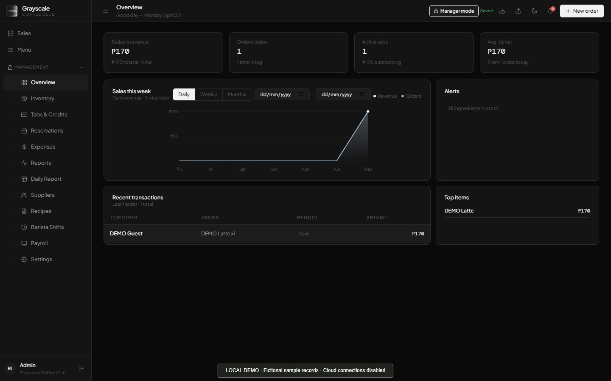
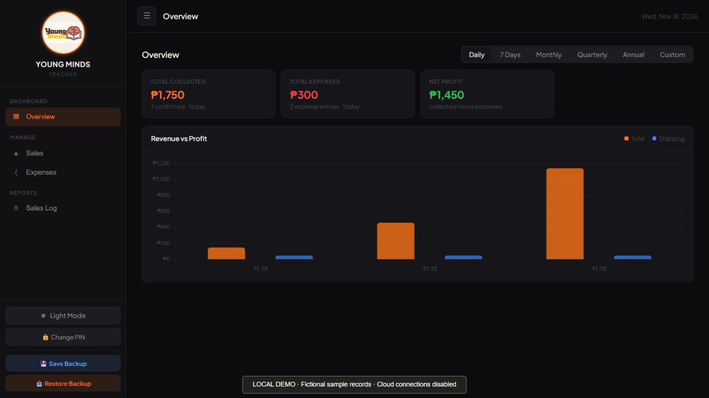
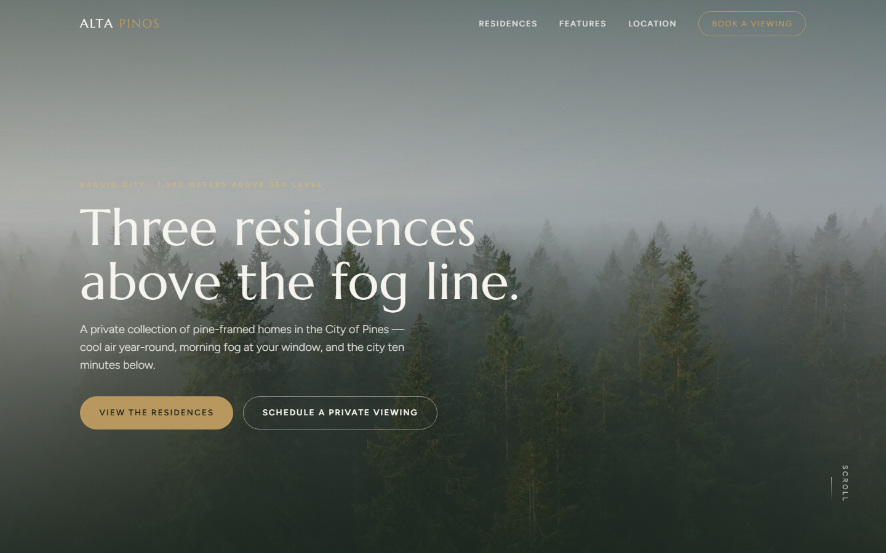

Restaurant Operations · 18 screens
Tenda Pro
Restaurant owners need sales, ingredient costs, stock and staff operations in one place.
View Case StudyProject Archive
A closer look at the interfaces and workflows I build for small businesses, client teams and my own studio.
Restaurant owners need sales, ingredient costs, stock and staff operations in one place.
View Case Study
Trace purchasing and stock movements from request through receiving, delivery and billing.
View Case Study
Present five operating companies through one consistent corporate website.
View Case Study
Connect property and tour discovery with booking administration and calendar availability.
View Case Study
Connect product discovery and ordering with the owner’s daily retail tools.
View Case Study
Give a second retail brand its own storefront and independent business records.
View Case Study
Replace manual court schedules with reservations, payment tracking and customer records.
View Case Study
Let customers discover services and book, while staff manage appointments and walk-ins.
View Case Study
Support sales and back-office work with device-first storage and later synchronization.
View Case Study
Keep the client lifecycle, sales pipeline and delivery administration in one workspace.
View Case Study
Coordinate intake, task allocation and artifact review in a spatial workspace.
View Case Study
Manage the orders, stock and expenses of my own frozen-goods business.
View Case Study
Bring cafe orders, the kitchen queue, stock and daily operations into one interface.
View Case Study
Coordinate transport, bookings, food inventory and print work across a business hub.
View Case Study
Track products, transactions and expenses in an operational dashboard.
View Case Study
Present stays and amenities and support availability inquiries.
View Case Study
Help visitors explore residences, photos and availability.
View Case StudyNo matching projects. Try another name or feature.